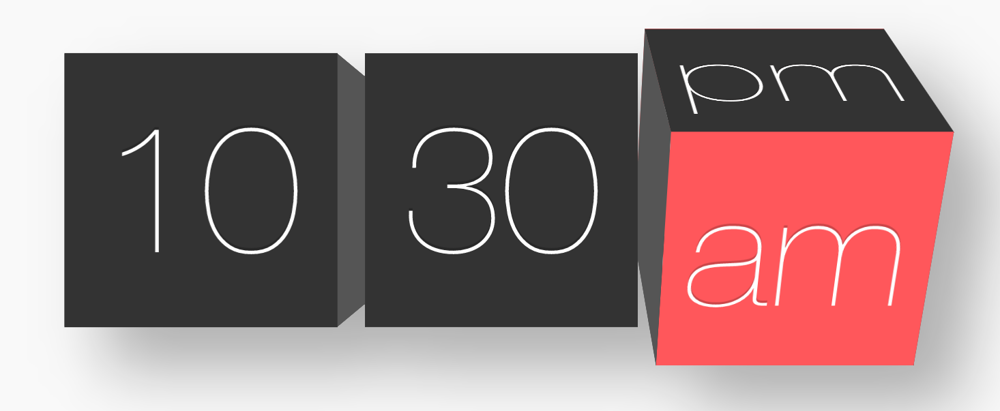
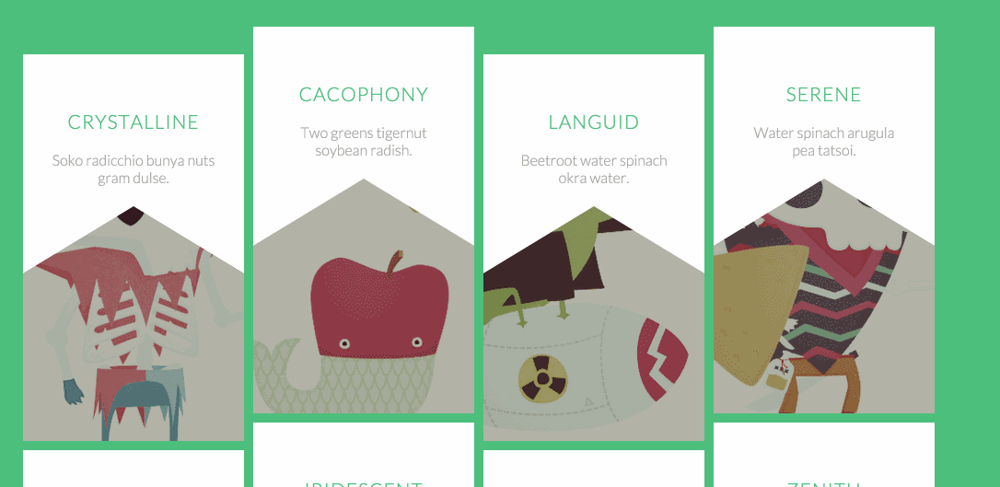
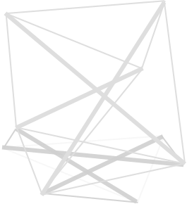
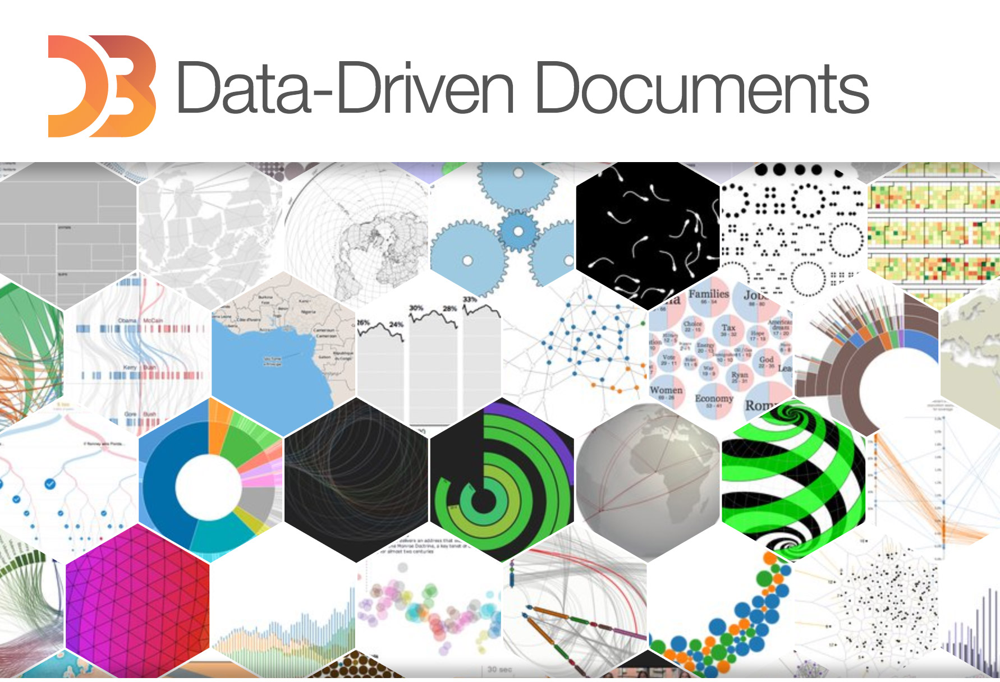
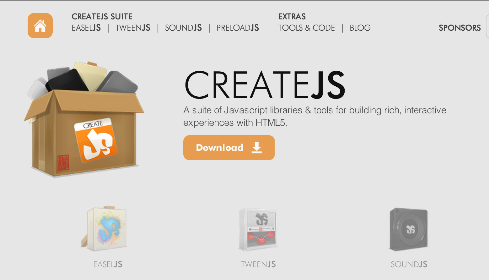
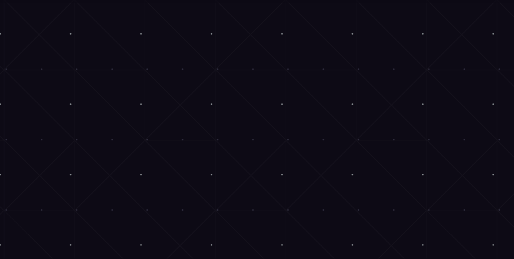

The Internet
of Shapes
or
how to craft geometric designs
with front-end code
Brenna O'Brien
@brnnbrnHackerYou
hackeryou.comfront-end developer
csshexagon.com
Why not just use an image?
Why?
#webperf
Everybody Loves Shapes
Makes shapes with code...
because web performance matters
because websites have moving parts
because you love a good challenge
because everybody loves shapes
How?
Tried and True
CSS Triangle Hack
CSS border-radius
Getting Fancy
CSS linear-gradient
CSS transforms
SVG (scalable vector graphics)
Sky's the Limit
HTML5 Canvas
go crazy with JavaScript libraries
CSS Triangle Hack
CSS Triangle
CSS borders bevel at the corners
shrink the box and the beveled corners become triangles!
CSS Triangle
.triangle {
width: 0;
height: 0;
border: solid 50px transparent;
border-bottom-color: #64C7CC;
}
CSS border-radius
round corners
border-radius: 10px;make circles
border-radius: 50%;CSS linear-gradient
linear gradient
.gradient-box {
background: linear-gradient(#64C7CC 0%, #128B98 100%);
}
linear gradient with hard stops
.gradient-box {
background: linear-gradient(#64C7CC 0%, #64C7CC 50%,
#128B98 50%, #128B98 100%);
}
angle for a slanty background
cool
background,
bro
.gradient-box {
background: linear-gradient(-45deg, #64C7CC 0%, #64C7CC 50%,
#128B98 50%, #128B98 100%);
}
repeat for stripes!
.gradient-box {
background-image: linear-gradient(#64C7CC 0%, #64C7CC 50%, #128B98 50%, #128B98 100%);
background-size: 70px;
}
Lea Verou - CSS3 Patterns
CSS transforms
2D Transforms
Basic Transforms
translate
rotate
skew
scale
rotate
transform: rotate(20deg);CSS diamond
start with a square
rotate just enough to make it stand on its corner
CSS diamond
.diamond {
width: 150px;
height: 150px;
background: #64C7CC;
transform: rotate(45deg);
}

skew
transform: skew(20deg);content gets transformed with it's container!
skew
skew
reset with a counter-transform
.skew {
width: 150px;
height: 150px;
background: #64C7CC;
transform: skew(20deg);
}
.skew p {
transform: skew(-20deg);
}
scale
transform: scale(1.3);scaleX
transform: scaleX(2);scaleY
transform: scaleY(2);stretch
transform: scaleY(2);compress
transform: scaleY(0.5);combining transformations
45 degree rotation
and a vertical compression
combining transformations
.narrow-diamond {
width: 150px;
height: 150px;
background: #64C7CC;
transform: scaleY(0.6) rotate(45deg);
}
order of transforms matter!
scaleY(0.6) rotate(45deg)rotate(45deg) scaleY(0.6)3D Transforms
X, Y and Z
transform: rotateX(45deg);
/*alternate syntax */
transform: rotate3D(45deg, 0, 0);
3D Solids
http://tympanus.net/Tutorials/HexaFlip/index2.html
+ transitions and animations
SVG
Scalable Vector Graphics
pattern.svg @ 3x
pattern.png @ 3x
including SVG
linked .svg file
<img src="images/heart.svg" alt="heart">
<svg> element
<svg width="175px"
height="175px" viewBox="0 0 100 100">
<line x1="116.139" y1="8.305" x2="12.25" y2="112.194"/>
<line x1="12.25" y1="112.194" x2="117.514" y2="217.458"/>
<line x1="117.514" y1="217.458" x2="221" y2="113.972"/>
</svg>
Basic SVG Shapes
<circle>
<ellipse>
<rect>
<polygon>
<line>
<polyline>
shapes are defined by co-ordinates
<svg viewBox="0 0 100 100" width="150" height="150" fill="#64C7CC">
<circle cx="50" cy="50" r="45"/>
</svg>
<svg viewBox="0 0 100 100" width="150" height="150" stroke="#64C7CC" stroke-width="3" >
<line x1="0" y1="150" x2="150" y2="0"/>
</svg>
anything goes with <path>
<path>
<svg x="0px" y="0px" width="300px"
height="486.24px" viewBox="-99.979 -162.047 300 485"
fill="#dedede">
<path d="M53.531-149 C-49.869-1.886-87.109,
139.671-92.709,305.44C-58.591,272.187,50.02,139.858,
88.765,132.167 c25.854-5.135,48.595,26.062,102.307,
128.312C178.008,116.698,118.265-54.826,
53.531-149L53.531-149z"/>
</svg>
colouring SVG
fill and stroke
<svg fill="#128B98" stroke="#fff" stroke-width="5">
Yo dawg, I heard you like SVG...
pattern fills
<svg fill="url(#triangles)" stroke="#fff" stroke-width="5" viewBox="0 0 150 150" width="300" height="300">
<defs>
<pattern id="triangles" width="20" height="20"
patternUnits="userSpaceOnUse" >
<polygon points="10,0 20,20 0,20"/>
</pattern>
</defs>
<polygon points="80,5 145,5 115,145 5,145"/>
</svg>
pattern fills with gradients
<defs>
<linearGradient id="gradient">
<stop offset="5%" stop-color="#64C7CC"/>
<stop offset="70%" stop-color="#107D89"/>
</linearGradient>
</defs>
pattern fills with images!
<defs>
<pattern id="yestrek"
patternUnits="userSpaceOnUse"
width="336" height="189" x="-100" y="-20">
<image xlink:href="http://bren.zone/yes.gif"
x="0" y="0" width="336" height="189"/>
</pattern>
</defs>
animating SVG
morph with SMIL (Synchronized Multimedia Integration Language)
<svg viewbox="0 0 100 100" width="200" height="200">
<path>
<animate
attributeName="d"
dur="3"
repeatCount="indefinite"
keyTimes="0;0.3;0.5;0.8;1"
values=" M50,0 L100,0 L100,50 L100,100 L50,100, L0,100 L0,50 L0,0; M50,0 L100,0 L100,50 L100,100 L50,100, L0,100 L0,50 L0,0;
M50,0 L75,25 L100,50 L75,75 L50,100, L25,75 L0,50 L25,25; M50,0 L75,25 L100,50 L75,75 L50,100, L25,75 L0,50 L25,25; M50,0 L100,0 L100,50 L100,100 L50,100, L0,100 L0,50 L0,0;"
/>
</path>
</svg>
snap.svg morphin'
 http://tympanus.net/Tutorials/ShapeHoverEffectSVG/index3.htmlanimated line drawings
stroke-dasharray
stroke-dashoffset
http://jakearchibald.com/2013/animated-line-drawing-svg/ http://css-tricks.com/svg-line-animation-works/
letters-inc.jp
HTML5 Canvas
start with <canvas>
<canvas width="500" height="300"></canvas>
paint with JavaScript
var canvas = document.getElementById("myCanvas");
var ctx = canvas.getContext("2d");
ctx.fillRect(50, 25, 150, 100);
ctx.fillStyle = ('#64C7CC');
canvas drawing methods
.beginPath()
.closePath()
.moveTo()
.lineTo()
.arc()
.arcTo()
.quadraticCurveTo()
.bezierCurveTo()
canvas drawing methods
var canvas = document.getElementById('canvas');
var ctx = canvas.getContext('2d');
ctx.fillStyle = '#64C7CC';
ctx.beginPath();
ctx.arc(100,100,75,Math.PI/7,-Math.PI/7,false);
ctx.lineTo(90,100);
ctx.fill('#64C7CC');
respond to user input (scroll)
http://codepen.io/calvindavis/pen/IKDfr
respond to user input (hover)
http://codepen.io/natewiley/pen/ypzmq/
isometric shapes
sheetengine
Isomer cubes
var iso = new Isomer(document.getElementById("cubes"));
var blue = new Isomer.Color(100, 199, 204);
iso.add(Isomer.Shape.Prism(new Isomer.Point(0, 0, 0)), blue);
iso.add(Isomer.Shape.Prism(new Isomer.Point(1, 2, 0)), blue);
iso.add(Isomer.Shape.Prism(new Isomer.Point(1, 0, 1)), blue);
canvas + data
D3.js
dataveyes.com
drawing & animations
CreateJS
brightmedia.pl
layering canvases
vector drawing & animations
Paper.js
two.js
Good Game Club
grifo.tv
tether.plaid.co.uk